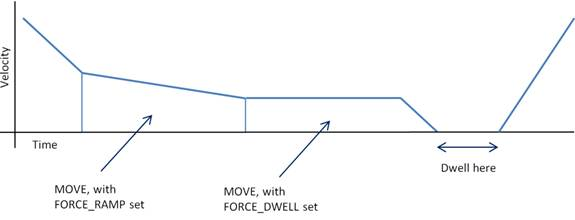

Axis Parameter
FORCE_RAMP AXIS(n) = <value>
FORCE_RAMP programs a change to the FORCE_SPEED over the length of the move and can be applied to advanced speed control moves (those suffixed with “SP”, like MOVESP, MOVEABSSP, MOVECIRCSP etc.).
The ramp is defined by the acceleration required to change from one speed to another over the length of the move with an increasing speed having a positive value and a decreasing speed a negative value. This is calculated by determining the duration of the move (from the move’s distance divided by the average speed (the sum of the initial and final speeds divided by 2)), and the acceleration required is determined from the speed change over the move divided by the duration just calculated.
After setting a ramp for a move, it is necessary to set FORCE_RAMP to zero before loading subsequent moves that do not require a ramp.
Since the way that this works is by constantly adjusting the move’s FORCE_SPEED value, this will result in many small changes in speed, and if using a VP_MODE that uses JERK, this will result in repeated application of jerk all along the length of the move. If this is a problem, then the same value that was assigned to FORCE_RAMP can be assigned to FORCE_ACCEL if the ramp is increasing in speed or FORCE_DECEL if the ramp is decreasing in speed, and the ENDMOVE_SPEED setting to the speed required, and this will result in a single application of jerk to start the ramp and a single application of jerk to end the ramp.

The acceleration required to change from one speed to the next over the length of the move.
Suppose the ENDMOVE_SPEED of the previous move was 100 and it is required that the next move programs a deceleration to 75 over the length of the move:
start_sp = 100
end_sp = 75
dist = 1
t = dist * 2 / (start_sp + end_sp)
ramp = (end_sp - start_sp) / t
FORCE_SPEED = start_sp
ENDMOVE_SPEED = end_sp
FORCE_RAMP = ramp
MOVESP(dist)
ENDMOVE_SPEED , STARTMOVE_SPEED , FORCE_ACCEL , FORCE_DECEL , FORCE_DWELL , FORCE_SPEED